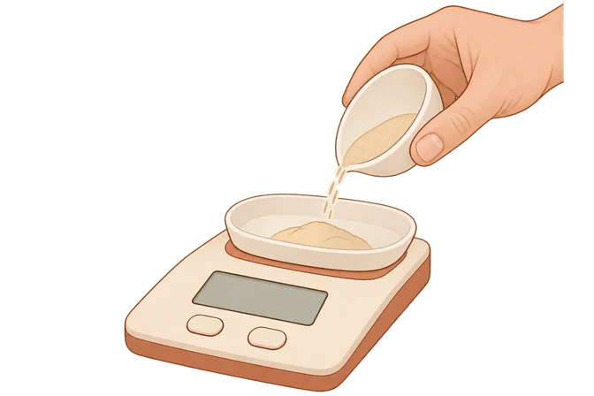
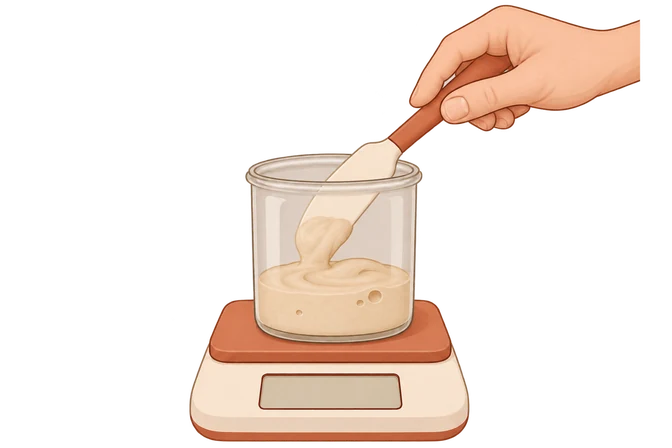
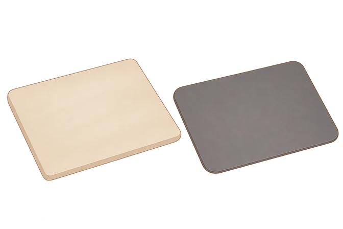
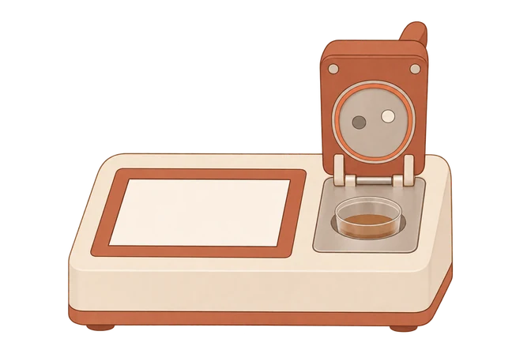

01 · Metodo e fonti · Dose di lievito
Pesare una piccola dose di lievito

Pesa il lievito nel piccolo recipiente tarato, usando una bilancia adatta alla dose richiesta dalla ricetta.02 · Metodo e fonti · Dose di lievito madre
Pesare la madre della ricetta

Trasferisci la madre nel recipiente tarato, togli la spatola e leggi il peso. Il peso non misura la forza del lievito madre.03 · Metodo e fonti · Conducibilità della superficie / preriscaldamento
Due superfici di cottura

Pietra a sinistra, acciaio a destra: due superfici che sostengono la pizza e trasferiscono calore al fondo. Preriscaldamento e uso dipendono dalla superficie e dalla ricetta.04 · Metodo e fonti · Attività dell’acqua (Aw)
Preparare una misura dell’attività dell’acqua

Il campione entra nella coppetta dello strumento, poi si chiude la camera per misurare l’attività dell’acqua. La stima di Vulcan non sostituisce questa misura.